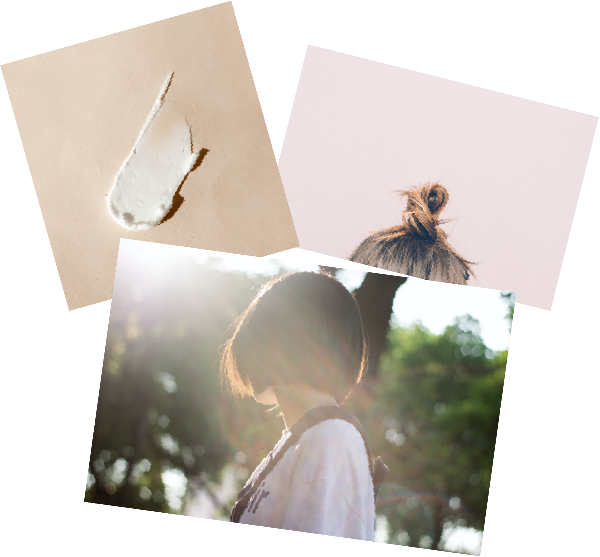

１０周年の美容院のリニューアルサイトを作成しました。
幅広い年齢層がターゲットであることと、営業実績が長いことを考慮して、
POPで可愛らしいイメージよりは綺麗で洗練された大人っぽい可愛らしさを意識しました。
また、LIFE STYLEにあったスタイルを提供するお店ということだったので、
ナチュラルさ＝自然っぽさを感じれる写真を使用しています。
予約数・SNSフォロワーUPを目的としているのでいつでもリンクへ飛べるようにヘッダーにボタンを配置しました。
全体の色も大人しいピンクとグレーを使用し、見やすい配色にしています。